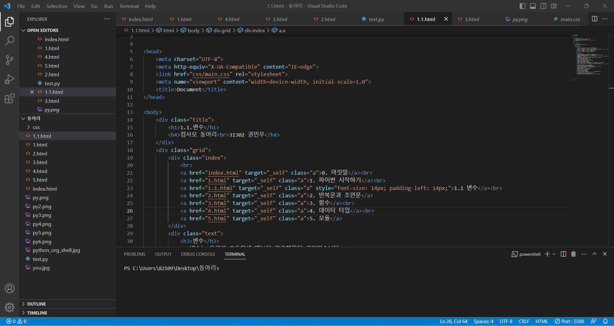
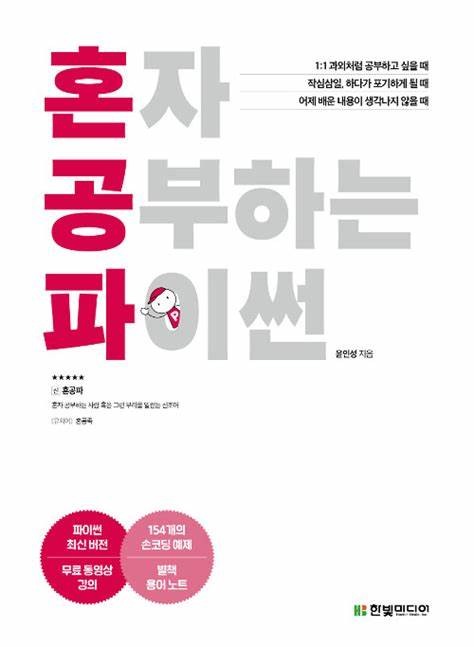
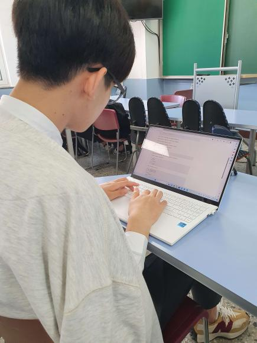

목적
컴퓨팅, 코딩을 이용하고 응용하는 동아리 목적을 지니고 있음에도 불구하고 기본적인 코딩 문법조차 모르는 부원들이 많다는 사실을 알게 되었다.
이것이 잘못된 것은 아니지만 보다 수월한 동아리 활동과 함께 진로를 향하기 위해선 기본적인 파이썬의 문법 정도는 알아야할 것이라고 생각을 했다.
따라서 기본적인 파이썬의 문법을 '혼자 공부하는 파이썬'을 참고하여 알려주어야겠다는 계획을 세웠고
가장 효과적인 전달 방식이 무엇일까 고민하다가 혹시 오류가 났을시 복사 및 붙여넣기로
비교, 수정 할 수 있는 웹을 만드는 것이 최선이라고 생각했다.
이제 이를 실현시키기 위해 html로 웹페이지를 만들고 기초 문법을 차차 적어나갈 것이다.
 결과
친구 약 3명 정도에게 테스트를 시킨 결과 간단한 구구단 계산기 문제나 반복문 문제 정도는 풀 수 있게 되었다.
원래는 리스트 및 데이터 타입이 1.파이썬 시작하기에 포함되어있었지만
정작 이를 제대로 사용하는 것은 3.함수부터이고 이마저도 겉핡기 식이라는 피드백을 받아
데이터 타입이라는 새로운 목차를 만들어서 이 문제를 해결하였으며 학습 효율을 높이고 내용도 보다 자세히 다룰 수 있었다고 생각한다.
또한 이 과정에서 사용자의 편의를 생각할 수 있는 시각과 웹 프로그래밍은 제작자가 아닌 사용자의 시각에서 생각을 할 줄 알아야 한다는 예상 외의 깨달음 또한 얻게 되었다.
이로써 기존의 목적을 달성하였다고 판단하였고 이를 통해 동아리 부원들의 능력도 상승시킬 수 있을 것이라고 예상한다.
